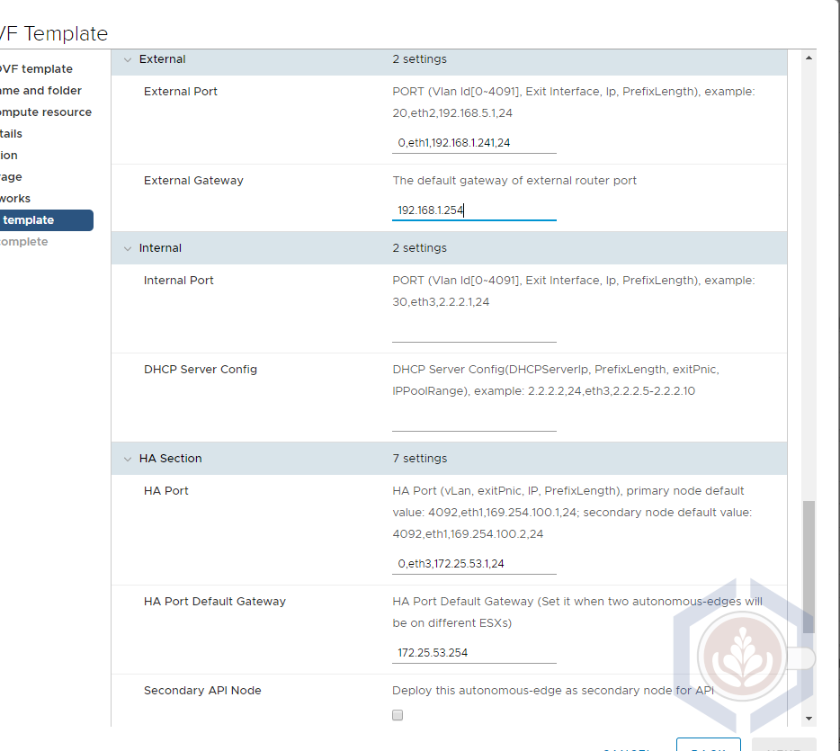
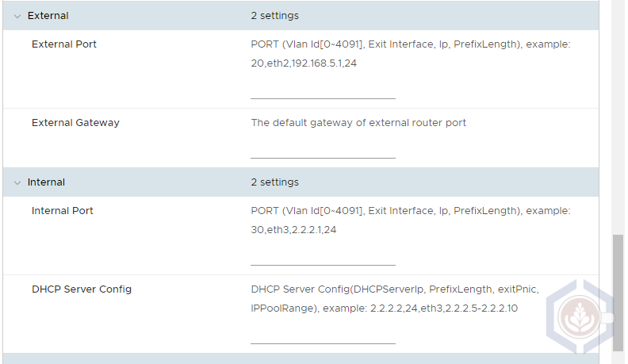
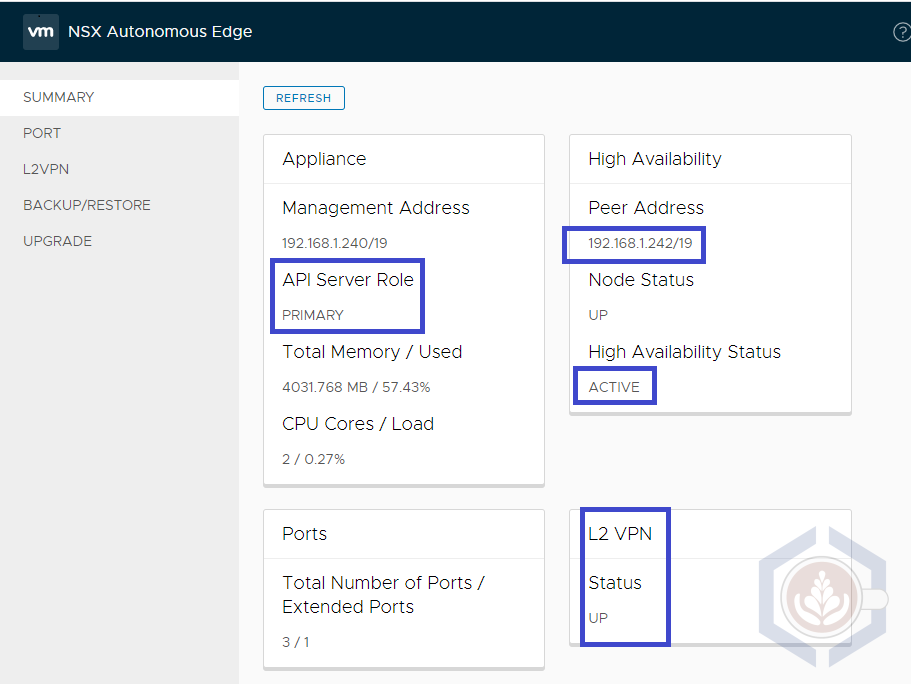
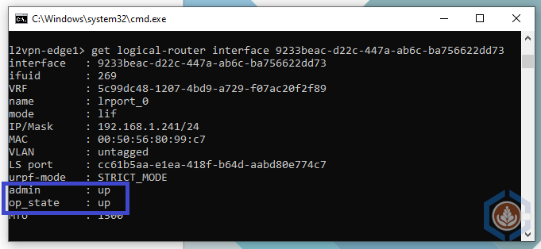
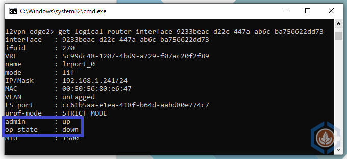
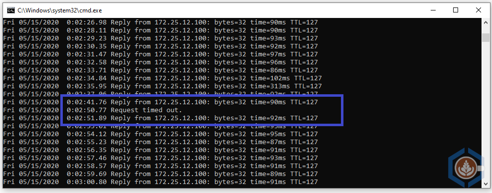

Configuring L2VPN High Availability in VMW on AWS
When we assist customers in designing a new VMware Cloud on AWS SDDC the question of Layer 2 extension comes up frequently. The reasons to extend on-prem networks are unique to each environment and can be a temporary state during migration or a long term strategy to ease scalability and bursting to the cloud.
VMW on AWS provides two options for extending an on-prem network to the SDDC - HCX Network Extension (NE) and Layer 2 VPN. While both solutions provide the same functionality they are different in several aspects. I won’t go into a detailed comparison in this post, but most users, especially if they are not very familiar with networking, will find that HCX NE is easier to configure and scale. L2 VPN, on the other hand, will provide faster recoverability from an appliance failure, and depending on how many networks are extended, it may use less compute resources on-prem and in the SDDC.
Since version 1.9 of VMW on AWS, the NSX-T 2.5 Autonomous Edge is used, which is simpler to configure and more performant than the previous L2 VPN client. In this post I will demonstrate how to configure the HA functionality for the autonomous edge.
When configuring a highly avaialable autonomous edge two appliances are deployed. The first edge that is deployed is the Primary edge and the second one is the Secondary edge. The Primary/Secondary value is permanent and simply indicates which edge was deployed first. It doesn’t represent which edge is active and handling the L2 VPN. This is shown by Active/Standby high availability status in the summary dashboard.
Deploying the Primary Autonomous Edge and Configuring L2 VPN
My colleague, David Zhang, wrote a great post explaining all the necessary steps to deploy L2 VPN on VMW on AWS using the autonomous edge. I followed David’s guide to configure L2 VPN and used the following values to set up the primary autonomous edge:
- Management IP - 192.168.1.240
- External Port
- Port – 0,eth1,192.168.1.241,24
- GW – 192.168.1.254
- Internal - left blank
- HA
- Port – 0,eth3,172.25.53.1,24
- GW – 172.25.53.254
- Do not fill any other values in the HA section

The L2 VPN tunnel and network extensions can be created before or after the secondary edge is deployed. There is no significance to the order in which these actions are performed.
Deploying the Secondary Autonomous Edge
Step 1 - Deploy the autonomous edge OVF. Make sure the exact same edge size (medium or large) and networks as the primary controller are selected.
Step 2 - Under network properties, enter the hostname, default gateway, management IP and netmask. Make sure the same subnet as the management network of the primary edge is entered. I used 192.168.1.242:
Step 3 - The external IP of the secondary edge can be blank. After powering on the appliance it will negotiate with the primary edge and the same external IP as the primary edge will be configured in a disconnected state. As with the primary edge the internal port should be blank:

Step 4 - Configure the HA port
- Port – 0,eth3,172.25.53.2,24 This port should be in the same subnet as the HA port of the primary edge
- Default GW – 172.25.53.254
- Check the Secondary API Node checkbox
- Primary node IP – 192.168.1.240 This is the management IP of the primary edge deployed previously
- Primary Node Credentials – If you changed the default username of the primay edge make sure you enter that username. Otherwise, it’s admin
- Primary node thumbprint – To get the API thumbprint login to the primary edge with the admin user and type the following command:
get certificate api thumbprint
Step 5 - Make sure the edge VMs are running on different hosts and migrate one if necessary. If DRS is configured on the cluster create a rule to separate the edges.
Validating The Secondary Edge Deployment
A couple of minutes after the secondary edge powered on login to both appliances to validate the High Availability status. Under HA Peer Address, each edge should list the opposite edge’s management IP as a peer.
Note – for some reason the management and peer addresses list a subnet mask of /19 on the web interface even though the correct mask of /24 is configured.
The primary edge should have a Primary API server role and an Active HA status. Once the L2 VPN is configured its status will be Up:

The secondary edge should have a Secondary API server role and Standby under HA status. Once the L2 VPN is configured its status will be Doen:
In the Port tab you can see that both edges have port named lrport_0 with the same IP and Port ID. The GUI doesn’t indicate what is the status of the port but this can be found using CLI. To do so login to both edges with the admin user and type the command get logical-router interfaces and find the port named lrport_0. You can also type get logical-router interface <port id>. The admin state of both ports should be up but the op_state of the standby edge should be down.
Command output of the Active edge: 
Command output of the Stnadby edge: 
Autonomous Edge HA Failover Test
To test the autonomous edge failover, I initiated a continuous ping with timestamp to a VM connected to an extended L2 network in VMW on AWS. After about 30 seconds to verify there are no drops, I powered off the active edge. The connection did drop but as can be seen in the screenshot below the standby edge claimed the external IP and re-established the L2 VPN tunnel in 10 seconds:

After powering on the powered-off edge the HA status between the edges was re-established. The secondary edge remains the active edge and the primary will become active again only in case of an additional failure.
Secondary edge status:
Primary edge status:
Asaf Blubshtein
Cloud Customer Success Architect
My current role focuses on VMware Cloud on AWS. I spend the rest of my time with my wife, our two cats, my home-lab, and our espresso machine.
The views and opinions expressed on this blog are my own and do not reflect the views and opinions of my employer.